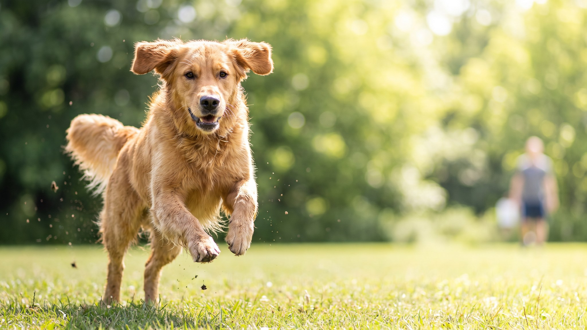

Здоровое ухо собаки обычно не нужно чистить по расписанию: достаточно осматривать его каждую неделю и после купания. Чистка полезна при видимом загрязнении на наружной раковине, а глубокие участки оставляют в покое. Здесь даны норма внешнего осмотра, необходимые принадлежности, шаги и чек-лист на вечер.
🐾 Заведите дневник ухода за собакой
Вес, шерсть, обработки, прививки — всё в одном месте. А если что-то смущает, AI-ветеринар ответит круглосуточно и бесплатно.
Завести дневник → Завести в MAX →
У вас iPhone? AnimaLife есть в App Store
Выберите спокойное время и хорошее освещение. Аккуратно поднимите ушную раковину или отведите её в сторону, если ухо стоячее. Осмотрите только доступные взгляду участки и сравните правую и левую стороны. Собака должна спокойно переносить лёгкое касание, без отдёргивания головы.
В привычном состоянии видимая кожа имеет ровный цвет, без заметного покраснения и припухлости. Допустимо небольшое количество светлого ушного секрета. Обычно отсутствует резкий запах, а шерсть вокруг сухая. Чистое ухо дополнительно не обрабатывают. Частое протирание раздражает кожу и превращает простой осмотр в неприятную процедуру.
Домашняя чистка нужна, когда на наружной раковине и в доступных складках видны пыль или скопившийся секрет, при этом собака спокойна. Если загрязнение находится глубоко и его не видно, не пытайтесь достать его инструментом. Оценку такого участка проводит ветеринар.
Положите рядом ватные диски или стерильную марлю, мягкое полотенце и лакомство. Лосьон используйте только ветеринарный и по назначению врача. Для одной процедуры достаточно смочить им марлю: она должна быть влажной, без стекающих капель. Ватные палочки, пинцеты и другие твёрдые предметы уберите со стола.
Обрабатывайте только видимую часть уха. Если собака вырывается, вся процедура останавливается. Вернитесь к короткому приучению к касаниям в другой день, когда питомец спокоен.
Частоту определяет состояние уха, а не универсальный календарь. Одной собаке достаточно еженедельного осмотра без чистки, другой врач назначит отдельный режим из-за формы раковины или особенностей шерсти. После купания проверьте доступные участки и промокните воду снаружи. Водные процедуры сами по себе не требуют лосьона.
Не повторяйте протирание несколько раз в день ради идеальной чистоты. Если после одной аккуратной обработки загрязнение остаётся, оставьте процедуру и запишите свои наблюдения. Отметьте дату, сторону и то, что именно вы видели. Эта запись пригодится на осмотре.
Обратитесь в клинику, если собака отдёргивает голову от привычного касания, часто трясёт ею, трёт ухо лапой или предметами. Поводом для обращения будут заметное покраснение, припухлость, резкий запах, обильный секрет либо новый наклон головы. Не начинайте домашнюю чистку при этих изменениях. Запишите, когда они появились, и покажите животное врачу.
Материал носит информационный характер и не заменяет очную консультацию ветеринара.
🐾 Чтобы уход не держать в голове
AnimaLife напомнит, когда стричь когти, вычёсывать, купать и обрабатывать от паразитов, и заведёт дневник по вашему питомцу. Бесплатно.
Настроить напоминания → Настроить в MAX →
У вас iPhone? AnimaLife есть в App Store
🐾 Понравился разбор?
Подпишитесь на канал — каждый день разбираем по одному тревожному симптому у кошек и собак: что в пределах нормы, а когда пора к врачу. Подпишитесь, чтобы не пропустить разбор, который может спасти здоровье вашего питомца.